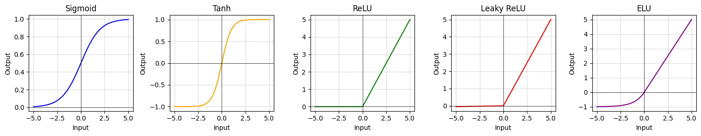
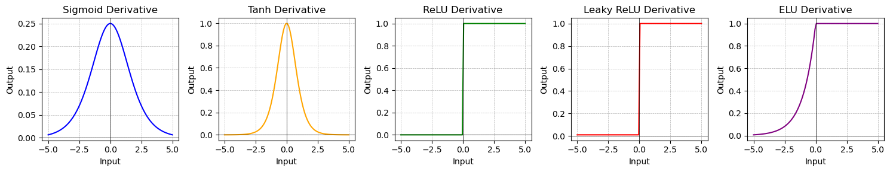
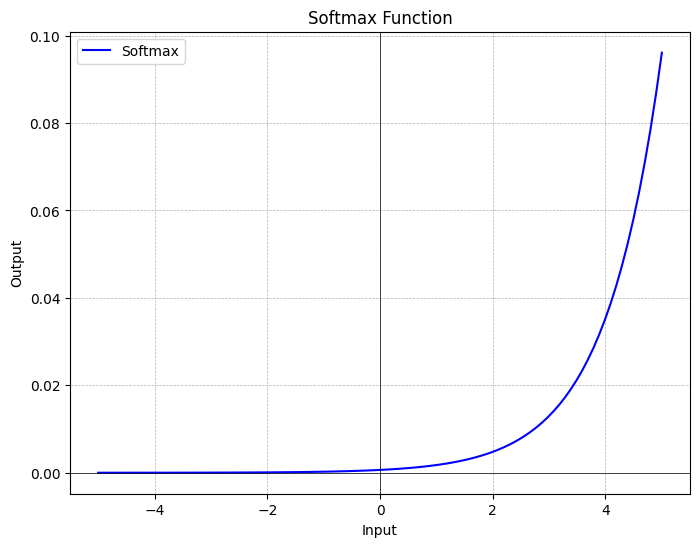

Deep learning is a subset of machine learning that focuses on artificial neural networks with multiple layers, enabling the model to learn hierarchical representations of data.
These neural networks are composed of multiple layers of interconnected nodes, called neurons, that can learn hierarchical representations of the data. Deep learning algorithms
excel at processing complex, high-dimensional data, such as images, speech, and text. DL has gained significant attention and success in recent years, achieving state-of-the-art
performance in various domains, including computer vision, natural language processing, and speech recognition.
Key Differences Between Machine Learning And Deep Learning
If deep learning is a subset of machine learning, how do they differ? Deep learning distinguishes itself from classical machine learning by the type of data that it works with
and the methods in which it learns.
Machine learning algorithms leverage structured, labeled data to make predictions—meaning that specific features are defined from the input data for the model and organized into
tables. This doesn’t necessarily mean that it doesn’t use unstructured data; it just means that if it does, it generally goes through some pre-processing to organize it into a
structured format.
Deep learning eliminates some of data pre-processing that is typically involved with machine learning. These algorithms can ingest and process unstructured data, like text and
images, and it automates feature extraction, removing some of the dependency on human experts.
Example: For example, let’s say that we had a set of photos of different pets, and we wanted to categorize by “cat”, “dog”, “hamster”, et cetera. Deep learning
algorithms can determine which features (e.g. ears) are most important to distinguish each animal from another. In machine learning, this hierarchy of features is established
manually by a human expert.
Then, through the processes of gradient descent and backpropagation, the deep learning algorithm adjusts and fits itself for accuracy, allowing it to make predictions about a
new photo of an animal with increased precision.
Machine Learning
Deep Learning
Approach
Requires structured data
Does not require structured data
Human intervention
Requires human intervention for mistakes
Does not require human intervention for mistakes
Hardware
Can function on CPU
Requires GPU / Significant computing power
Time
Takes seconds to hours
Takes weeks
Uses
Forecasting, predicting and other simple applications
More complex applications like autonomous vehicles
Applications of Deep Learning
Key application areas and some specific examples:
Computer Vision:
Image Classification: Categorizing images (cats vs. dogs, types of clothing, etc.).
Object Detection: Finding and identifying objects within an image (for self-driving cars, robotics, security).
Semantic Segmentation: Labeling every pixel in an image with its corresponding class (road, building, etc.). This has applications in urban planning and augmented
reality.
Image Generation and Style Transfer: Creating realistic images with tools like GANs, or applying artistic styles to photos.
Natural Language Processing (NLP):
Machine Translation: Automatic translation between languages (Google Translate, DeepL).
Text Generation: Creating human-quality text, from creative writing to writing marketing copy.
Sentiment Analysis: Analyzing the emotional tone of reviews, social media posts, and more.
Chatbots and Virtual Assistants: Interacting with customers, providing support (Siri, Alexa).
Healthcare:
Medical Image Analysis: Detecting tumors, diagnosing diseases from X-rays, CT Scans, MRIs, and more.
Drug Discovery: Analyzing vast chemical databases to design potentially effective new drugs.
Genomics: Understanding the relationship between genes and diseases, improving personalized medicine.
Predictive Healthcare: Predicting patient outcomes and helping with treatment plans.
Recommender Systems:
Product recommendations: Predicting which products someone might like (Amazon, Netflix).
Content Personalization: Tailoring news feeds, music playlists, and other content to a user's preferences.
Advertising: Using deep learning to better target online ads based on a user's interests.
Finance:
Fraud Detection: Analyzing patterns to flag suspicious financial activity.
Algorithmic Trading: Using deep learning to develop trading strategies and automatically execute trades.
Risk Assessment: Assessing the creditworthiness of customers or organizations.
Other Notable Applications:
Self-driving Cars: Perception systems in autonomous vehicles heavily rely on deep learning for recognizing objects, lane lines, and making decisions.
Robotics: Deep learning enables robots to perceive the world, navigate complex environments, and manipulate objects.
Gaming: Creating intelligent game AI, generating complex game environments, and enhancing the player experience.
Agriculture: Monitoring crop health, identifying pests, and improving farming practices.
Accessibility: Creating tools for people with visual or hearing impairments through image captioning and automated sign language translation.
Deep Learning model classification
Deep learning models can be classified into several categories based on their architecture and the type of data they are designed to process. Here are some common types of deep
learning models along with
examples:
Convolutional Neural Networks (CNNs):
Description: Convolutional Neural Networks (CNNs) are a class of deep learning models primarily used for image and video processing (computer vision) tasks.
They excel at
learning spatial hierarchies and capturing local patterns. CNNs consist of convolutional layers that apply filters to input images, enabling feature extraction. These filters
detect patterns
such as edges, textures, and shapes. Following convolutional layers, pooling layers are often used to downsample the data, reducing dimensionality while preserving important
features. Finally,
fully connected layers are employed for classification tasks, where the extracted features are combined to make predictions. CNNs have achieved breakthrough performance in
various computer
vision tasks, including image classification, object detection, and image segmentation.
Example: An example of CNN is the VGG (Visual Geometry Group) network, which achieved high performance on image classification tasks. Another example is the
popular ResNet
(Residual Network), known for its deep architecture and efficient training.
Recurrent Neural Networks (RNNs):
Description: Recurrent Neural Networks (RNNs) are a class of deep learning models specifically designed for processing sequential data, such as time series or
natural language.
They are equipped with internal memory, which enables them to maintain a memory of past inputs and process information with temporal dependencies. This memory allows RNNs to
capture sequential
patterns and context, making them well-suited for tasks like speech recognition, language modeling, and machine translation. RNNs incorporate recurrent connections within their
architecture,
forming loops that allow information to persist and be passed from one time step to another, facilitating the modeling of sequential relationships in the data.
Example: An example of an RNN is the Long Short-Term Memory (LSTM) network, which addresses the vanishing gradient problem in traditional RNNs and is widely used
for tasks
like speech recognition, language translation, and text generation.
Generative Adversarial Networks (GANs):
Description: GANs consist of two neural networks—a generator and a discriminator—competing against each other. The generator network learns to create realistic
data instances, such as images, while the discriminator network tries to distinguish between the generated data and real data. GANs are popular for generating synthetic data,
image synthesis, image-to-image translation, and even creating deepfake videos.
Example: An example of GAN is the DCGAN (Deep Convolutional Generative Adversarial Network), which extends the GAN architecture with convolutional layers.
DCGANs are used
for generating high-quality images and video synthesis.
Autoencoders:
Description: Autoencoders are neural networks trained to reconstruct input data, typically used for dimensionality reduction and feature learning. They consist
of an encoder
network that compresses the input into a lower-dimensional representation (encoding), and a decoder network that reconstructs the input from the encoding.
Example: An example of an autoencoder is the Variational Autoencoder (VAE), which adds a probabilistic interpretation to the latent space learned by the encoder.
VAEs are used for generating new data samples and performing data imputation.
Transformer Models:
Description: Transformer models are designed for processing sequential data, particularly suited for natural language processing tasks. They rely on self-attention
mechanisms to capture long-range dependencies in input sequences without recurrent connections.
Example: The Transformer architecture, introduced in the paper "Attention is All You Need", is widely used in state-of-the-art NLP models such as BERT (Bidirectional
Encoder Representations from Transformers) for tasks like text classification, question answering, and language translation.
Neural Networks
Neural networks are a computational model inspired by the structure and function of biological neural networks in the human brain. They consist of interconnected nodes, called neurons,
organized in layers. Each neuron receives input signals, performs a computation, and produces an output signal. Neural networks are capable of learning complex patterns and relationships
in data, making them powerful tools for various machine learning tasks.
Here's the core idea:
Neurons: The basic units of computation. In an artificial neural network, these are usually simple mathematical functions. They receive inputs, process them, and produce
an output.
Connections: Like neurons of the brain are connected by synapses, artificial neurons are linked. Each connection has a weight that represents its importance.
Learning: The power of neural networks lies in their ability to adjust the weights of these connections based on training data. This allows them to learn complex patterns
and relationships.
Specialization: Highly effective for image and video analysis.
Convolutional Layers: Extract features from images using filters. Think of these filters as sliding windows searching for edges, shapes, textures, etc.
Pooling Layers: Reduce data size and make the network more robust to slight variations in the input.
Memory: Designed to handle sequential data (text, time series). These networks have internal memory (hidden states) which allows them to 'remember' past information.
Common Architectures: LSTM (Long Short-Term Memory) and GRU (Gated Recurrent Unit) networks are more advanced types of RNNs designed to address potential shortcomings
in the plain RNN.
Autoencoders: Used for dimensionality reduction and data compression. They consist of an encoder and decoder; the encoder learns to compress data into a compact representation,
while the decoder tries to reconstruct the original input from this compressed form.
Generative Adversarial Networks (GANs): Two neural networks playing a game. One network (generator) produces synthetic data, while the other (discriminator) tries to distinguish
real data from the generated data. This leads to models capable of creating incredibly realistic fake images, audio, and even text.
Neural networks are incredibly flexible – the right architecture depends on the problem you're solving.
Diagrams make a complex topic visual and easier to grasp.
Deep learning utilizes multiple layers of neurons, which is where the 'deep' comes from.
Why Deep Learning Is So Effective
Learning Complex Patterns: Deep learning systems can discover intricate patterns in huge datasets too complex for humans to spot.
Generalization: They generalize well to new, unseen data because these complex patterns help them make intelligent inferences.
Feature Engineering: Traditionally, extracting meaningful features from data was labor-intensive. Deep learning automates much of this, allowing the model to discover helpful
representations.
Understanding the Neural Network Jargon
The important jargon in the world of neural networks are:
Input Layer: Where you feed the raw data (pixels of an image, words in a sentence) into the network.
Hidden Layers: Layers between the input and output. This is where the majority of the computation and "learning" occurs. The more hidden layers, the 'deeper' the neural
network.
Output Layer: Delivers the final prediction or classification from the network. The activation function to be used in this layer is different for different problems.
For a binary classification problem, we want the output to be either 0 or 1. Thus, a sigmoid activation function is used. For a Multiclass classification problem, a Softmax
(think of it as a generalization of sigmoid to multiple classes ) is used. For a regression problem, where the output is not a predefined category, we can simply use a linear unit.
Weights: Each connection between neurons has a weight, signifying its relative importance to the neural network's final prediction. Training a neural network
involves fine-tuning these weights.
Bias: Acts as a sort of intercept term, adding an extra value to a neuron's calculation. This helps give the network extra flexibility when fitting the data.
Learning Terminology
Activation Function: A non-linear function (e.g., Sigmoid, ReLU, Tanh) applied to the output of a neuron. It introduces non-linearity, essential for the network
to represent complex patterns.
Backpropagation: The core algorithm for training neural networks. Through iterations of forward and backward passes, it calculates how much each weight contributes
to the final error and adjusts those weights accordingly.
Gradient Descent: An optimization algorithm widely used in deep learning. It guides the process of updating weights during backpropagation by moving "downhill" on
a function representing the error of the network. (for more details, see Gradient Descent method and linear regression.)
Loss Function: Measures the error between the network's prediction and the true label. During training, the aim is to minimize the loss function.
Epoch: One full pass through the entire training dataset.
Batch Size: The number of data samples processed before updating weights during training.
Other Important Terms
Hyperparameters: Settings you choose before training like the number of layers, learning rate, etc. Fine-tuning these is part of the art of deep learning.
Overfitting: When a model is too complex for the data and starts memorizing specific examples rather than learning general patterns.
Regularization: Techniques to prevent overfitting (like L1/L2 regularization, dropout).
Activation function
Activation functions are mathematical functions applied to the output of neurons in neural networks. They introduce non-linearity into the network, allowing it to learn complex patterns
and relationships in the data. Here are some common activation functions used in machine learning along with their formulas:

Various activation functions (for more details, see my Github repo )

Derivatives of these activation functions (for more details, see my Github repo)
Sigmoid Function:
Formula:
$$\sigma(x) = \frac{1}{1+ e^{-x}}$$
Range: (0, 1)
Description: Sigmoid function squashes the input values to a range between 0 and 1. It is useful in binary classification tasks where the output needs
to be interpreted as probabilities.
Shortcomings:
Vanishing Gradient: Sigmoid functions saturate for large positive or negative inputs, leading to vanishing gradients during backpropagation,
which can slow down or hinder learning, especially in deep networks.
Output Range: The output of the sigmoid function is not centered around zero, which may result in unstable gradients and slower convergence
when used in deep networks.
Description: Tanh function squashes the input values to a range between -1 and 1, making it suitable for classification tasks where the output needs
to be centered around zero.
Tanh functions are commonly used in hidden layers of neural networks, especially in recurrent neural networks (RNNs), to capture non-linearities and maintain gradients
within a centered range.
Shortcomings:
Vanishing Gradient: Similar to the sigmoid function, tanh functions also suffer from the vanishing gradient problem for large inputs, particularly
in deep networks.
Saturation: Tanh functions saturate for large inputs, leading to slower convergence and potentially unstable gradients.
Rectified Linear Unit (ReLU):
Formula:
$$f(x) = \text{max}(0,x)$$
Range: \([0, +∞]\)
Description: ReLU function returns 0 for negative inputs and the input value for positive inputs. It is the most commonly used activation function in deep
learning due to its simplicity and effectiveness.
ReLU functions are widely used in deep learning due to their simplicity and effectiveness. They allow for faster convergence and are less prone to vanishing gradients compared
to sigmoid and tanh functions.
Shortcomings:
Dying ReLU: ReLU neurons can become inactive (or "die") for negative inputs during training, leading to dead neurons and a sparse representation of the
input space. This issue is addressed by variants such as Leaky ReLU and Parametric ReLU.
Unbounded Output: ReLU functions have an unbounded output for positive inputs, which may lead to exploding gradients during training, especially in deeper
networks.
Description: Leaky ReLU addresses the "dying ReLU" problem by allowing a small gradient for negative inputs, preventing neurons from becoming inactive.
Shortcomings:
Hyperparameter Tuning: Leaky ReLU introduces a hyperparameter (the leak coefficient) that needs to be manually tuned, which can be cumbersome and
time-consuming.
Description: ELU function smoothly handles negative inputs and can converge faster than ReLU, but it may be computationally more expensive.
ELU functions smoothly handle negative inputs and can converge faster than ReLU. They have a mean activation closer to zero, which helps to alleviate the vanishing gradient problem.
Shortcomings:
Computational Cost: ELU functions involve exponential operations, which may be computationally more expensive compared to ReLU and its variants.
Softmax Function:
Formula:
$$\text{softmax}(x_i) = \frac{e^{x_i}}{\sum_{j=1}^k e^{x_j}}$$
for \(i=1,2, ... k\) where \(k\) is the number of classes.
Range: (0, 1) for each class, with all probabilities summing up to 1
Description: Softmax function is commonly used in the output layer of a neural network for multi-class classification tasks. It converts raw scores into probabilities.
Softmax functions are used in the output layer of neural networks for multi-class classification tasks. They convert raw scores into probabilities, enabling the model to make
predictions across multiple classes.
Shortcomings:
Sensitivity to Outliers: Softmax functions are sensitive to outliers and large input values, which may affect the stability and reliability of the
predicted probabilities.

These activation functions play a crucial role in the training and performance of neural networks by controlling the output of neurons and enabling the network to learn complex
relationships in the data.
In summary, the choice of activation function depends on the specific requirements of the task, the architecture of the neural network, and empirical performance on the validation data.
It is often beneficial to experiment with different activation functions and monitor the training dynamics and model performance to select the most suitable one for a given problem.
Additionally, using advanced techniques such as batch normalization and adaptive learning rate methods can help mitigate some of the shortcomings associated with activation functions.
How does the network learn?
Neural networks learn through a process called backpropagation, which is a fundamental algorithm for training deep learning models. The process of learning involves adjusting the parameters
(weights and biases) of the neural network to minimize a chosen loss function, which measures the difference between the predicted outputs and the true targets in the training data.
Here's a step-by-step overview of how neural networks works learn:
Initialization: The parameters of the neural network (weights and biases) are initialized with random values.
Forward Propagation: During the forward propagation step, input data is passed through the network, layer by layer, to generate predictions. Each neuron performs a
weighted sum of its inputs, applies an activation function, and passes the result to the neurons in the next layer. This process continues until the output is produced.
Loss Calculation: Once the predictions are obtained, a loss function is used to quantify the difference between the predicted outputs and the true targets in the
training data. Common loss functions include mean squared error (MSE) for regression tasks and categorical cross-entropy for classification tasks.
Backpropagation: Backpropagation is the heart of the learning process in neural networks. It involves computing the gradients of the loss function with respect to
the network parameters using the chain rule of calculus. The gradients represent the direction and magnitude of the changes needed to minimize the loss.
Gradient Descent: With the gradients computed, the network parameters are updated iteratively using optimization algorithms such as gradient descent. The parameters
are adjusted in the direction that reduces the loss, with the size of the updates controlled by the learning rate.
Iteration: Steps 2 to 5 are repeated for multiple iterations (epochs) over the entire training dataset. Each iteration consists of forward propagation to generate
predictions, backpropagation to compute gradients, and parameter updates using gradient descent.
Validation: Periodically, the model's performance is evaluated on a separate validation dataset to monitor its generalization ability and prevent overfitting. The
validation loss is used as a proxy for the model's performance on unseen data.
Termination: Training continues until a stopping criterion is met, such as reaching a maximum number of epochs or observing no improvement in the validation loss.
Deep learning hardware requirements
Deep learning requires a tremendous amount of computing power. High performance graphical processing units (GPUs) are ideal because they can handle a large volume of calculations in multiple cores with copious memory available. However, managing multiple GPUs on-premises can create a large demand on internal resources and be incredibly costly to scale.
However, here are some general guidelines for the hardware needed for deep learning:
GPU (Graphics Processing Unit):
GPUs are essential for accelerating deep learning training and inference processes. They are highly parallel processors capable of performing large-scale matrix operations in parallel, which are common in deep learning computations.
NVIDIA GPUs are the most commonly used for deep learning due to their superior performance and support for popular deep learning frameworks such as TensorFlow and PyTorch.
The choice of GPU depends on budget and requirements, with higher-end GPUs offering more compute power and memory for training larger models and handling larger datasets.
CPU (Central Processing Unit):
While not as critical as GPUs for deep learning, CPUs are still necessary for handling various tasks such as data preprocessing, managing I/O operations, and running parts of the deep learning pipeline that are not GPU-accelerated.
Modern CPUs with multiple cores and high clock speeds can improve overall system performance and multitasking capabilities.
RAM (Random Access Memory):
Sufficient RAM is crucial for loading and manipulating large datasets, storing model parameters and intermediate computations during training, and running multiple processes concurrently.
The amount of RAM needed depends on the size of the datasets and models being used. Deep learning models with larger numbers of parameters and larger batch sizes require more RAM.
Storage:
Fast and ample storage is necessary for storing datasets, model checkpoints, training logs, and other resources.
SSDs (Solid State Drives) are preferred over HDDs (Hard Disk Drives) for faster data access and better overall performance, especially during data loading and model training.
Cluster/Cloud Computing:
For large-scale deep learning tasks, such as training complex models on massive datasets, distributed computing resources such as GPU clusters or cloud computing platforms may be required.
Cloud-based services like Amazon Web Services (AWS), Google Cloud Platform (GCP), and Microsoft Azure offer GPU-accelerated instances and managed services for deep learning at scale.
Power Supply and Cooling: High-performance GPUs can consume a significant amount of power and generate a lot of heat during intensive computations. Adequate power supply and cooling solutions, such as high-wattage power supplies and efficient cooling systems, are necessary to ensure stable operation and prevent overheating.
Overall, the hardware requirements for deep learning depend on factors such as the complexity of the models, size of the datasets, desired training speed, and budget constraints. It's essential to carefully consider these factors when selecting hardware for deep learning tasks to ensure optimal performance and efficiency.